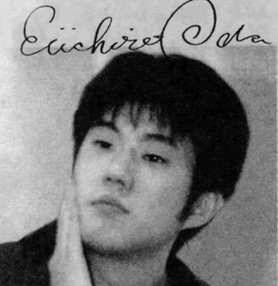

O mangá de One Piece começou em 1997 e é escrito por Eichiro Oda e com o grande sucesso dois anos após se tornou anime.
Atualmente a série tem mais do que 1000 capítulos e toda semana um novo capitulo é publicado na Shonen Jump, já o anime já passou de 1000 episódios e semanalmente aumenta cada vez mais.
A LENDA DE ONE PIECE" – Riqueza, fama, poder. O homem que conquistou tudo neste mundo, o Rei dos Piratas, Gol D. Roger! "
Tal homem apesar de conquistar tudo acabou sendo pego e condenado a morte, mas antes de morrer desferiu as seguintes palavras que foram enviadas para todos no mundo:
" – Minhas riquezas e tesouros? Se vocês quiserem, eu os deixo pegar. Procurem por ele, deixei tudo naquele lugar! " Isto inspirou muitos a se tornarem piratas e buscar seus sonhos, em busca do grande tesouro, em busca do "One Piece"!!
·· One Piece Capitulo 1 – "Romance Dawn" ··As ultimas palavras do rei dos piratas Gold Roger antes de sua execução inspiraram um incontável número de piratas a buscar a última ilha da Grand Line, a ilha de Raftel, onde Gold Roger escondeu seu precioso tesouro, "One Piece". Assim o mundo entrou na era pirata.
A história de One Piece segue Monkey D. Luffy, que sonha encontrar o "One Piece" e se tornar o rei dos piratas. Quando criança, ele se inspirou por um pirata que usava sua cidade natal como base, Shanks.
Determinado a se tornar um pirata, Luffy constantemente pede a Shanks para levá-lo ao mar mesmo ele não conseguindo nadar. Depois de Shanks ter um vergonhoso encontro com um bandido local, Luffy perde a confiança nos piratas e acidentalmente come uma Akuma No Mi (Gomu Gomu no Mi) e acaba se tornando um homem-borracha isso fez com que ele nunca mais possa nadar.
Alguns dias depois Shanks vai para o mar, e Luffy defendendo-o nesses dias de ausência acaba sequestrado pelo bandido. Quando o bandido estava prestes a matar Luffy quando o bando de Shanks aparece, e um membro de sua tripulação acaba com todos os capangas do bandido usando apenas uma mão, mas o bandido escapa para o mar com Luffy. Após se distanciar um pouco da costa com Luffy a sorte vira e o bandido acaba virando comida de um monstro marinho, que estava pronto para comer Luffy quando Shanks aparece e o salva, mas infelizmente perde seu braço esquerdo.
Depois deste evento Luffy decide se tornar um pirata por si mesmo, juntar uma tripulação mais forte que a de Shanks, achar o maior tesouro do mundo e se tornar o rei dos piratas.
Logo antes de sua partida Shanks entrega a Luffy seu chapéu de palha favorito e diz para ele devolve-lo assim que se tornar um grande pirata.
A história de Luffy se inicia 10 anos depois, quando ele finalmente deixa sua casa a procura de amigos, aventuras e seus sonhos, mas esta você não ficará sabendo por aqui.
Eiichiro Oda, nascido 1 de janeiro de 1975 na cidade de Kumamoto, no Japão, é um mangaká, mais conhecido como o criador do mangá "One Piece". Ele é casado com Chiaki Inaba.
Como uma criança, Oda foi inspirado por vikings e aspirou a tornar-se um artista de mangá. Ele apresentou um personagem chamado Pandaman para o clássico mangá Kinnikuman luta de Yudetamago. Pandaman não só foi utilizado em um capítulo do mangá, mas também voltar como um personagem recorrente na cameo próprias obras de Oda. Ele é conhecido por adicionar Ester Eggs em seu mangá para os fãs detectarem, incluindo Doskoi Panda. Oda foi inspirado no criador de Dr. Slump e Dragon Ball, Akira Toriyama. Quando ele era jovem, gostava de jogar futebol na escola e foi apelidado Odacchi por seus amigos. Ele viria a voz Odacchi no "Rei Football Dream!" curta que foi adicionada ao "Reino de Chopper na Ilha dos Animais Estranhos", o terceiro filme One
CuriosidadesO nome de Oda muitas vezes aparece nas lombadas de livros no anime. Em uma pergunta Shonen Jump perguntando " Se você pudesse ser qualquer personagem de mangá , quem você seria ? " Oda disse que ele gostaria de ser Nico Robin para que ele pudesse " brotar mãos e desenhar mangá vinte vezes mais rápida." Na pesquisa Oricon, como uma resposta para a pergunta " O mangaká que mudou a história manga" Eiichiro Oda levou o 4 º lugar.Eiichiro-oda-avatar Avatar do Oda
Oda é frequentemente chamado de “Odacchi”, “sensei” ou “Oda-sensei” por seus fãs. Não há dados concretos sobre a renda anual de Oda. Já se estimou que o mangaká fature cerca de 2 bilhões de ienes anualmente com os royalties de One Piece. No entanto, o programa de TV japonês Baka Furi divulgou que Oda provavelmente fatura por volta de 3,1 bilhões de ienes anualmente através da audiência do anime, comissões, licenciamentos internacionais e merchandising.[3] Em 2007, Oda recebeu cerca de cem emails com ameaças de morte enviados pela esposa de um de seus ex-assistentes. Ela foi presa em 2009.
Em uma das entrevistas de Oda para a Shonen Jump durante as primeiras edições de One Piece, Oda afirmou que Buggy era até então seu vilão favorito na história, e que se ele pudesse comer uma Akuma No Mi seria a Bara Bara No Mi.